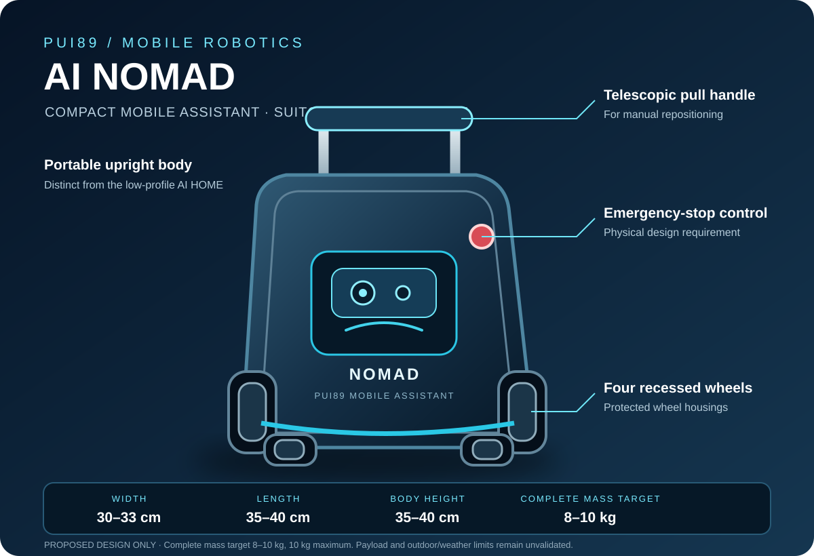

Upright, compact rectangular travel-luggage body with rounded protective corners, a front sensor/status panel and a retractable telescopic pull handle. The visual language should read immediately as a premium carry-on suitcase, not an animal-shaped robot.
DEVELOPMENT STAGEStage 1 of 5Concept · four-wheel mobile-assistant definition
PUI89 / AI NOMAD / FOUR-WHEEL MOBILE ASSISTANT
PUI89 AI NOMAD
Four-Wheel Mobile Assistant Robot
A compact AI mobile assistant built around the familiar form of an upright airline carry-on suitcase: a rectangular luggage body, four small swivel caster wheels at the base and a retractable telescopic pull handle. It is designed as a mobile luggage-style companion for supervised travel and everyday assistance, clearly separate from indoor AI HOME. The four wheels are luggage-style casters, not legs; wheel-drive and steering mechanisms remain engineering decisions.
Redefined concept · not built · not tested · not certified
Carry-on suitcase product definition — four-wheel luggage mobility
Exactly four small luggage-style swivel caster wheels positioned at the bottom corners/base, similar to a four-wheel spinner suitcase. They are wheels, not articulated legs. The final caster, motorisation, steering, braking and suspension design remains to be engineered.
Owner-supervised mobile AI assistant for carrying personal belongings and supporting travel or everyday mobility in suitable, controlled environments. The payload, following behaviour and operating scenarios require separate requirements and safety validation.
Current proposed envelope: 30–33 cm wide × 35–40 cm deep × 35–40 cm body height, excluding the extended handle. Complete robot mass target: 8–10 kg; 10 kg maximum including battery, handle and installed hardware. These are design targets, not measured prototype specifications.
Suitcase-inspired form does not mean airline approval. Airline cabin-baggage dimensions, mass allowances, battery rules and acceptance vary by carrier and must be checked separately. No airline-compliance claim is made.
CPU-first local perception may provide observations, alerts and bounded proposals. Independent motion control, obstacle stop, manual override and physical emergency stop require separate engineering and testing.
Non-negotiable identity: PUI89 AI NOMAD is a four-wheel carry-on-suitcase-style mobile assistant. Do not use dog, quadruped, four-legged, paw, gait, leg-kinematics or animal-body descriptions or imagery. PUI89 Sentinel is the separate quadruped exploration robot.
Engineering and validation gates
- Suitcase packaging: define the body envelope, handle travel/locking, access panels, corner protection, wheel placement and luggage-style handling.
- Wheel and drive architecture: compare four passive swivel casters with a suitable powered-wheel arrangement; calculate turning, traction, braking, stability and manual pull behaviour. Do not assume four drive motors.
- Mass and payload closure: account for enclosure, handle, four wheels, motors, battery, sensors, wiring and safety hardware within the 10 kg complete-robot maximum; payload remains TBD.
- Electrical and thermal safety: define battery protection, isolation, fusing, charging limits, thermal monitoring and emergency-stop behaviour.
- Software and simulation: test obstacle alerts, route boundaries, stale sensors, communication loss, low battery, safe hold and manual recovery.
- Controlled trials: begin with supervised low-speed operation on flat indoor surfaces; expand only after measured braking, stability, handling and endurance evidence.
- Travel readiness: assess airline baggage rules, battery transport restrictions, public-space rules and privacy requirements separately; do not imply airline or regulatory approval.
Status: PROPOSED CARRY-ON-SUITCASE CONCEPT / NOT BUILT / NOT VALIDATED. No measured payload, speed, runtime, obstacle clearance, weather rating, airline acceptance or field reliability is established.
Pricing and prototype cost
Retail price: not announced. AI NOMAD remains a proposed design. Its complete BOM, manufacturing method, environmental validation, service plan and Thailand landed cost have not been established.
PUI89 will publish a price only after component origin, engineering compatibility, complete prototype cost, testing, warranty and support costs have been reviewed. No orders or sales are currently offered.
Four-wheel identity and distinction from AI HOME and Sentinel
PUI89 AI NOMAD is a four-wheel mobile-assistant robot. It is a separate product from PUI89 Sentinel. NOMAD is positioned as a mobile-assistant platform whose detailed tasks and user scenarios are still to be defined. Sentinel has the distinct all-terrain exploration and inspection direction. Their mission requirements, mechanical designs, locomotion software, safety cases and validation plans must remain separate.
Both projects may reuse versioned PUI89 Shared AI Core interfaces, perception components, evidence handling and safety principles. No mobility or terrain performance is attributed to either product without supervised testing and documented evidence.
Separate product identity
AI HOME remains the dedicated four-wheel indoor home-assistance product. AI NOMAD is a separate compact four-wheel mobile assistant for portable/outdoor and mixed-environment use, with a retractable manual handle. AI HOME remains the indoor home-assistance product; their roles, chassis layouts and safety cases are distinct.
AI NOMAD — four-wheel mobile assistant
Compact four-wheel mobile-assistant concept with requirements and engineering baseline under review.
AI NOMAD engineering repository ↗AI HOME — indoor
Separate four-wheel indoor home-safety concept.
HOME English page ↗ · Thai page ↗ · HOME repository ↗Four-wheel mobility development direction
Evaluate suitable environments, terrain limits, obstacle negotiation and recovery through simulation and controlled trials.
Define useful assistant tasks with real users before fixing payload, autonomy or product-size targets.
Indoor & outdoor assistance research
- Owner-supervised outdoor awareness and campsite monitoring.
- Obstacle and terrain awareness with conservative safe-stop behaviour.
- Mapping and localization research; no unsupervised roaming.
- Environmental observations such as smoke, abnormal heat and weather-related changes only when suitable sensors are selected and validated.
- Wildlife and activity observations for human review, not wildlife deterrence or guaranteed protection.
- Offline-first operation and clear reports showing evidence, uncertainty and limitations.
Safety and resilience requirements
- Define and test operating limits for rain, dust, temperature, slopes, loose ground, water exposure, darkness, battery endurance and connectivity.
- Prioritize battery protection, electrical isolation, overcurrent protection, thermal monitoring and guarded wiring.
- Water resistance, weather resistance, fire performance and hazardous-atmosphere protection are unverified engineering requirements—not current capabilities.
- Do not claim waterproof, fireproof or explosion-proof performance without specified independent testing and applicable certification.
- Never delay emergency response or replace certified alarms and qualified responders.
- Owner supervision, human-reviewed decisions, safe-stop defaults and privacy protection are mandatory design principles.
Shared PUI89 intelligence
PUI89 AI NOMAD may reuse versioned WorldState, Observation, ActionProposal and FailureReport contracts, evidence provenance, uncertainty handling, safety gates, benchmark records and report formats. Four-wheel drive, steering, braking, wheel-ground traction, stability, obstacle handling and environmental limits remain NOMAD-specific and unvalidated.
Current development status
FOUR-WHEEL CONCEPT / ENGINEERING REQUIREMENTS UNDER REVIEW. Documentation and an early deterministic software foundation do not prove a built robot, integrated sensors, trained AI model, validated locomotion, outdoor reliability or certified safety. All physical capabilities remain proposed until supported by reproducible engineering evidence.
Open this project website by QR code
Scan to open this exact English project page. The QR code is a static image hosted by PUI89; it does not use a redirect or paid QR service.

PUI89 SHARED INTELLIGENCE · PROJECT-SPECIFIC SCOPE
Perception & Task Intelligence
Project-specific capabilities built on the PUI89 Shared AI Core.
Perception
- Indoor/outdoor scene and terrain classification
- Obstacle, person and dynamic-object detection
- Depth/free-space and ground-condition estimation
- Localization and route-context perception
- Weather/environment sensor fusion where available
- Temporal tracking and uncertainty assessment
Tasks
- Identify obstacles and unsuitable path segments
- Assess path condition and slope from available evidence
- Maintain a timestamped route/observation history
- Propose conservative route choices for human supervision
- Request safe stop when perception or localization is unreliable
- Monitor sensor health and report mission status
Future research
Visual-inertial odometry, optional LiDAR/RGB-D comparison, low-speed navigation simulation, terrain datasets and measured outdoor robustness. No unvalidated terrain or weather capability should be claimed.
Evidence status: Proposed product scope, not a claim that every capability is implemented. Report code, software tests, dataset evaluation and real-world validation separately.
PUI89 / AI TECHNICAL VISUAL
AI Technology & Workflow